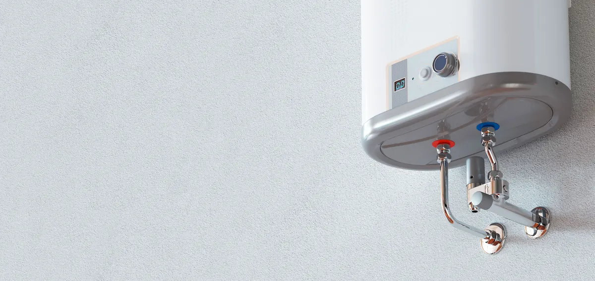

A hot shower is one of those modern comforts you don’t fully appreciate until it suddenly turns into an ice bath. When it’s time to replace your old unit, it’s tempting to treat a new water heater like any other DIY household project. How hard can it be? A couple of pipes, a electrical wire or gas connection, and you’re back in business, right?
Not quite.

Water heaters operate under high pressure, generate intense thermal energy, and store dozens of gallons of water above your subfloors. A minor oversight during installation can lead to severe structural damage, costly utility bills, or even health and safety risks.
At Angle Stop Plumbing, our veteran-led team focuses on precision engineering, attention to detail, and protecting your family. Here is a breakdown of why getting your water heater installed by the pros keeps your home safe, dry, and running smoothly for years to come.
1. Electrical Safety: The Importance of Non-Metallic Fittings
Safety is the absolute priority when working with major home appliances, especially units running on electricity or high-pressure fuel lines.
When plumbing connections are made using mismatched metals (such as connecting copper pipes directly to steel water heater nipples), a chemical process called galvanic corrosion occurs. Over time, electric currents pass between the dissimilar metals, degrading the pipe wall, causing leaks, and creating safety hazards.
Galvanic Corrosion Cycle:
[ Copper Pipe ] <---> [ Galvanized Steel Nipple ]
│
└──> Chemical Reaction ──> Rust, Leaks & Electrical Grounding Issues
To combat this, the professionals at Angle Stop Plumbing utilize non-metallic fittings and dielectric unions. These specialized connectors create a physical and electrical break between different metals:
- Prevents Stray Voltage: Ensures your plumbing system doesn't accidentally become an ungrounded pathway for electrical currents.
- Stops Early Corrosion: Extends the life of your pipe connection points by preventing rust and chemical decay.
- Keeps Your Family Safe: Eliminates structural weakness that could lead to sudden pipe ruptures or scalding bursts.
2. Water Damage Prevention: Drip Pans Installed the Right Way
Did you know that water heater failures are one of the most common causes of residential water damage claims? A small hairline fracture or tank rupture can spill up to 80 gallons of water into your garage, closet, or living area in minutes.
A drip pan is your water heater’s first line of defense—but simply setting the heater inside a plastic tray isn't enough.
[ Professionally Fitted Drip Pan ] ──> [ Dedicated Drain Line ] ──> [ Safe Exterior Exit ]
When Angle Stop Plumbing installs a water heater, we ensure:
- Proper Pan Sizing & Material: We select heavy-duty, temperature-rated pans suited specifically to your system size (conventional tank, heat pump, or tankless).
- Correct Drain Line Pitch: We don't just catch the water; we route a dedicated PVC or copper drain line pitched correctly toward the exterior of your home.
- Code Compliance: Local building codes require proper drainage to prevent localized flooding and hidden subfloor mold growth.
3. Long-Term Efficiency: The Power of Proper Check Valve Placement
If you want reliable hot water performance that lasts for years without running up your energy bill, system hydraulics matter. That's where check valves come in.
Check valves are one-way mechanical valves that allow water to flow in one direction while preventing backflow. In a water heating system, correct check valve placement delivers several major benefits:
Prevents Thermal Siphoning
Without properly installed check valves, heat naturally rises through your pipes even when no taps are open. This wastes energy by continuously cooling down the stored water in your tank, forcing your heater to cycle on more often.
Stops Cross-Contamination
Check valves prevent hot water from backing up into your cold-water supply lines, ensuring your drinking water stays cold, and your water heater maintains consistent internal pressure.
Protects Expansion Tanks
In closed-loop plumbing systems, check valves direct thermal expansion safely toward your expansion tank rather than pushing pressure back into public water mains or damaging internal tank seals.
The Professional Difference with Angle Stop Plumbing
Installing a water heater isn't just about turning a wrench; it’s about precision, code compliance, and building a system designed to last.
Feature
DIY / Amateurs
Angle Stop Plumbing
Metal Connections
Often mismatched, leading to rapid corrosion
Non-metallic fittings & dielectric isolation for safety
Leak Defense
Missing or un-drained drip pans
Fully plumbed drip pans pitched to exterior outlets
System Pressure
Ignored pressure spikes & thermal expansion
Calibrated check valves & expansion tank protection
Peace of Mind
Fingers crossed every time you travel
Veteran-led precision & local professional warranties
At Angle Stop Plumbing, we bring detail-oriented, veteran-led craftsmanship to every home we serve across Middle Tennessee. From choosing non-metallic fittings to ensuring perfectly routed drip pans and check valves, we build reliability into every step of the process.
Ready for Worry-Free Hot Water?
Don't wait for a leak or a cold shower to force your hand. Contact the trusted pros at Angle Stop Plumbing today at (615) 398-3048 or visit us online to schedule your water heater replacement or routine inspection!